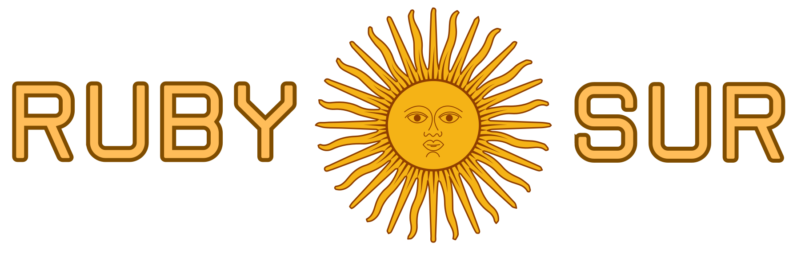

---
# front matter tells Jekyll to process Liquid
---
{% include analytics.html %}
RubySur - Argentina
{% assign cacheBust = site.time | date:'?v=%s' %}
{% include navbar.html %}

Somos un grupo de +500 Devs en Ruby y Ruby on Rails
based en Buenos Aires, Argentina 🇦🇷
Nos reunimos una vez al mes para compartir charlas, experiencias, y
mantener discusiones técnicas relacionadas con Ruby.
{% include highlighted_meetup.html %} {% include about_us.html %} {%
include sponsors.html %} {% include stats.html %} {% include
contact_us.html %}
{% include footer.html %}